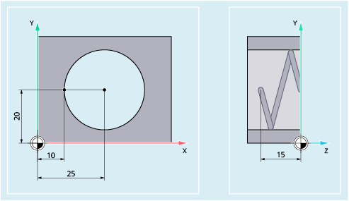

Mit folgenden Befehlen werden im NC-Programm die Vorschubgeschwindigkeiten für alle an der Bearbeitungsfolge beteiligten Achsen eingestellt.
| Zeitreziproker Vorschub | |
Einheit: | [1/min] | |
| Linearvorschub | |
Einheit: | [mm/min], [inch/min] oder [Grad/min] | |
| Umdrehungsvorschub | |
Einheit: | [mm/Umdrehung] bzw. [inch/Umdrehung] | |
Der Umdrehungsvorschub kann wählbar abgeleitet werden von einer Masterspindel, einer beliebigen anderen Spindel oder einer Rundachse. | ||
| Adresse zur Angabe des Bahnvorschubs Wirksam für alle oder nur für die mit FGROUP ausgewählten Bahnachsen. | |
| Vordefinierte Prozedur zur Festlegung der Bahnachsen, auf die sich der unter F programmierte Bahnvorschub beziehen soll | |
| Kanalachsnamen der Bahnachsen | |
Typ: | AXIS | |
| Schlüsselwort zur Programmierung des effektiven Radius (Bezugsradius) einer unter FGROUP angegebenen Rundachse Die Programmierung von FGREF ist für jede unter FGROUP angegebene Rundachse erforderlich. | |
| Name der Rundachse | |
Typ: | AXIS | |
| Grenzgeschwindigkeit für Synchron-/Bahnachsen Pro Achse (Kanalachse, Geometrieachse oder Orientierungsachse) kann ein FL-Wert programmiert werden. | |
Einheit: | Es gilt die mit G94 eingestellte Einheit. | |
Das folgende Beispiel soll die Wirkung von FGROUP auf den Bahnweg und Bahnvorschub verdeutlichen. Die Variable $AC_TIME enthält die Zeit vom Satzanfang in Sekunden. Sie ist nur in Synchronaktionen verwendbar.
| Programmcode | Kommentar |
|---|---|
| N100 G0 X0 A0 | |
| N110 FGROUP(X,A) | |
| N120 G91 G1 G710 F100 | ; Vorschub= 100mm/min bzw. 100Grad/min |
| N130 DO $R1=$AC_TIME | |
| N140 X10 | ; Vorschub= 100mm/min, Bahnweg= 10mm, R1= ca.6s |
| N150 DO $R2=$AC_TIME | |
| N160 X10 A10 | ; Vorschub= 100mm/min, Bahnweg= 14.14mm, R2= ca.8s |
| N170 DO $R3=$AC_TIME | |
| N180 A10 | ; Vorschub= 100Grad/min, Bahnweg= 10Grad, R3= ca.6s |
| N190 DO $R4=$AC_TIME | |
| N200 X0.001 A10 | ; Vorschub= 100mm/min, Bahnweg= 10mm, R4= ca.6s |
| N210 G700 F100 | ; Vorschub= 2540mm/min bzw. 100Grad/min |
| N220 DO $R5=$AC_TIME | |
| N230 X10 | ; Vorschub= 2540mm/min, Bahnweg= 254mm, R5= ca.6s |
| N240 DO $R6=$AC_TIME | |
| N250 X10 A10 | ; Vorschub= 2540mm/min, Bahnweg= 254,2mm, R6= ca.6s |
| N260 DO $R7=$AC_TIME | |
| N270 A10 | ; Vorschub= 100Grad/min, Bahnweg= 10Grad, R7= ca.6s |
| N280 DO $R8=$AC_TIME | |
| N290 X0.001 A10 | ; Vorschub= 2540mm/min, Bahnweg= 10mm, R8= ca.0.288s |
| N300 FGREF[A]=360/(2*$PI) | ; 1 Grad = 1 inch über den effektiven Radius einstellen. |
| N310 DO $R9=$AC_TIME | |
| N320 X0.001 A10 | ; Vorschub= 2540mm/min, Bahnweg= 254mm, R9= ca.6s |
| N330 M30 |
Die Bahngeschwindigkeit der Bahnachsen wird reduziert, falls die Synchronachse Z die Grenzgeschwindigkeit erreicht.
| Programmcode | |
|---|---|
| N10 G0 X0 Y0 | |
| N20 FGROUP(X) | |
| N30 G1 X1000 Y1000 G94 F1000 FL[Y]=500 | |
| N40 Z-50 |
Die Bahnachsen X und Y fahren mit programmiertem Vorschub, die Zustellachse Z ist Synchronachse.
| Programmcode | Kommentar |
|---|---|
| N10 G17 G94 G1 Z0 F500 | ; Zustellen des Werkzeugs. |
| N20 X10 Y20 | ; Anfahren der Startposition. |
| N25 FGROUP(X,Y) | ; Achsen X/Y sind Bahnachsen, Z ist Synchronachse. |
| N30 G2 X10 Y20 Z-15 I15 J0 F1000 FL[Z]=200 | ; Auf der Kreisbahn gilt Vorschub 1000 mm/min, in Z-Richtung wird synchron verfahren. |
| ... | |
| N100 FL[Z]=$MA_AX_VELO_LIMIT[0,Z] | ; Durch Lesen der Geschwindigkeit aus dem MD wird die Grenzgeschwindigkeit abgewählt, der Wert aus dem MD gelesen. |
| N110 M30 | ; Programmende. |
Siehe auch:
Vorschub (G93, G94, G95, F, FGROUP, FL, FGREF): Weitere Informationen